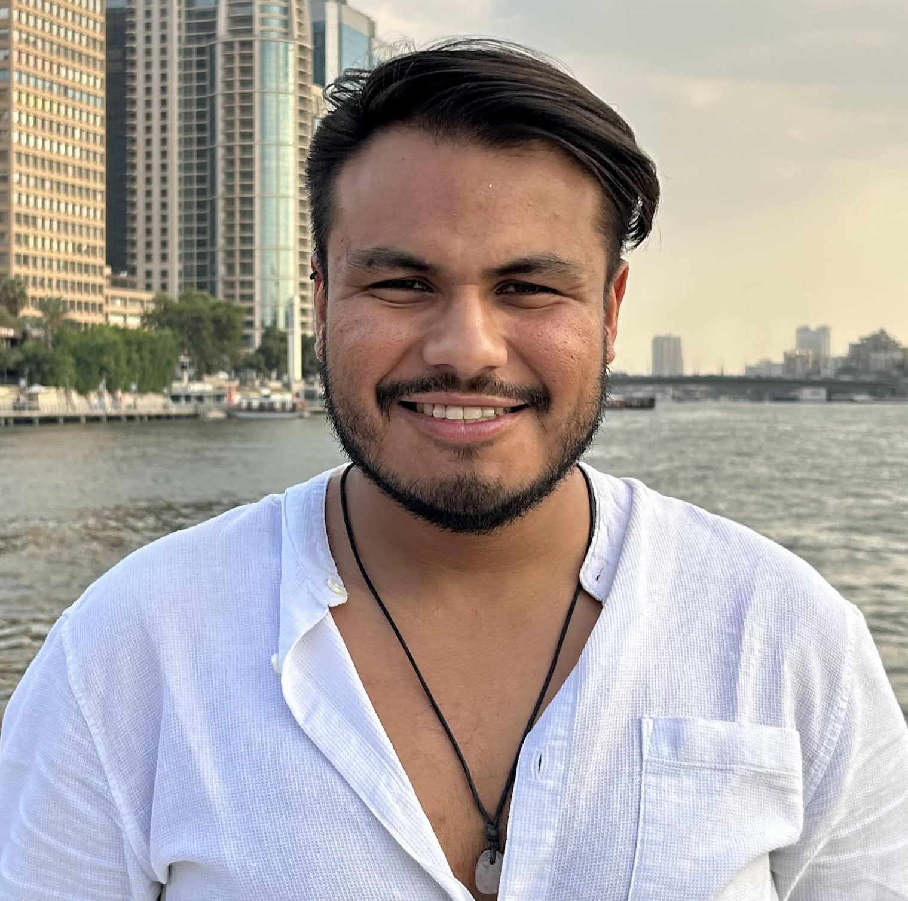
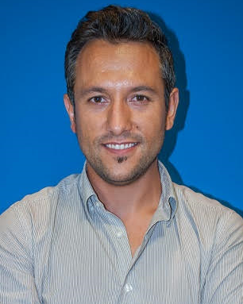
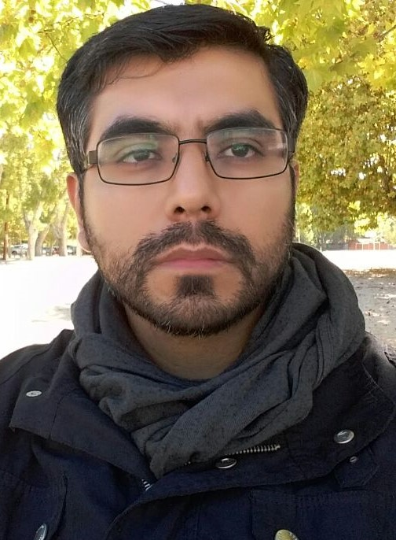

Routing & scheduling
Dynamic, stochastic, multi-echelon, and last-mile routing; crew and fleet scheduling.
Proposed IEEE CEC 2027 Special Session
A focused forum on evolutionary optimization for sustainable transportation and logistics—from dynamic routing and traffic control to resilient, low-carbon mobility.
Modern mobility and logistics combine large search spaces, competing objectives, uncertain demand, time-dependent networks, operational constraints, and decisions that must adapt while the system is running.
ECSTL connects evolutionary computation researchers with transport and operations specialists. We welcome new algorithms motivated by transport challenges and rigorous applications that reveal reusable insights for evolutionary optimization.
Dynamic, stochastic, multi-echelon, and last-mile routing; crew and fleet scheduling.
Signals, ramp metering, network design, congestion management, and incident response.
Transit synchronization, demand-responsive services, ride sharing, and multimodal planning.
Electric fleets, charging, energy-aware routing, emissions, and lifecycle objectives.
Roadworks, maintenance, disruption recovery, robustness, and climate adaptation.
Surrogate-assisted search, expensive optimization, co-simulation, and real-time decision support.
Efficiency, cost, safety, accessibility, equity, emissions, and service quality trade-offs.
Neuroevolution, automated design, quality-diversity, and data-driven optimization.
Memetic algorithms, matheuristics, co-evolution, and combinations with exact methods.
The session treats transportation as a source of demanding evolutionary computation research—not only as an application area. The goal is to produce methods, benchmarks, and lessons that travel across domains.
Dynamic and uncertain optimization, constraint handling, scalability, expensive objectives, many-objective search, and adaptation are central EC problems.
Transport offers clear operational, environmental, and social outcomes, enabling convincing evaluation beyond synthetic functions.
The session creates a meeting point for evolutionary computation, operations research, intelligent transportation, logistics, and urban systems.
Shared datasets, simulators, benchmark formulations, open implementations, and realistic uncertainty models are especially encouraged.
The proposed team spans Spain, Mexico, and Greece and combines research in evolutionary computation, intelligent transport, optimization, machine learning, traffic operations, and logistics.


University of Deusto · Spain
Computational intelligence & mobility

National Technical University of Athens · Greece
Traffic operations & intelligent transport
These dates follow the IEEE CEC 2027 website. Prospective authors should consult the official conference pages for updates and submission instructions.
ECSTL sharpens the previous cross-disciplinary scope around evolutionary computation and transport optimization.